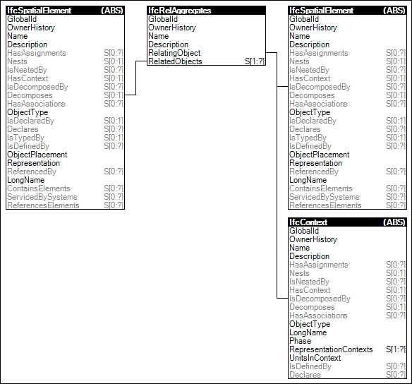

Link to this page
Link to this pageProvision of a spatial structure of the project by aggregating spatial elements. The spatial structure is a hierarchical tree of spatial elements ultimately assigned to the project. Composition refers to the relationship to a higher level element (e.g. this storey is part of a building).
The order of spatial structure elements being included in the concept for builing projects are from high to low level: IfcProject, IfcSite, IfcBuilding, IfcBuildingStorey, IfcSpace. Therefore an spatial structure element can only be part of an element at the same or higher level.
In addition a more general hierarchical tree of spatial elements can be created by using IfcSpatialZone.
Figure 63 illustrates an instance diagram.
 |
Figure 63 — Spatial Composition |